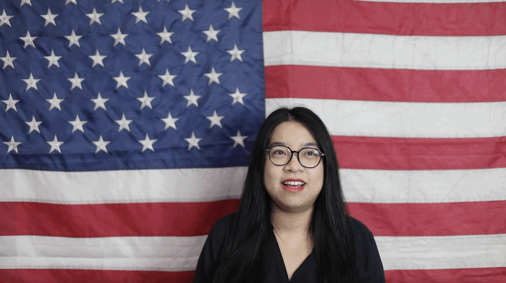
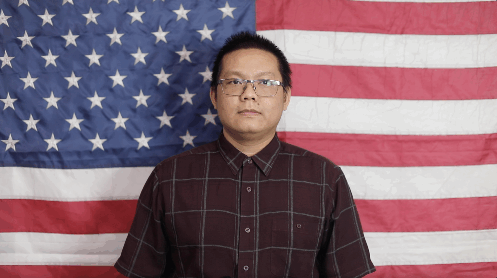
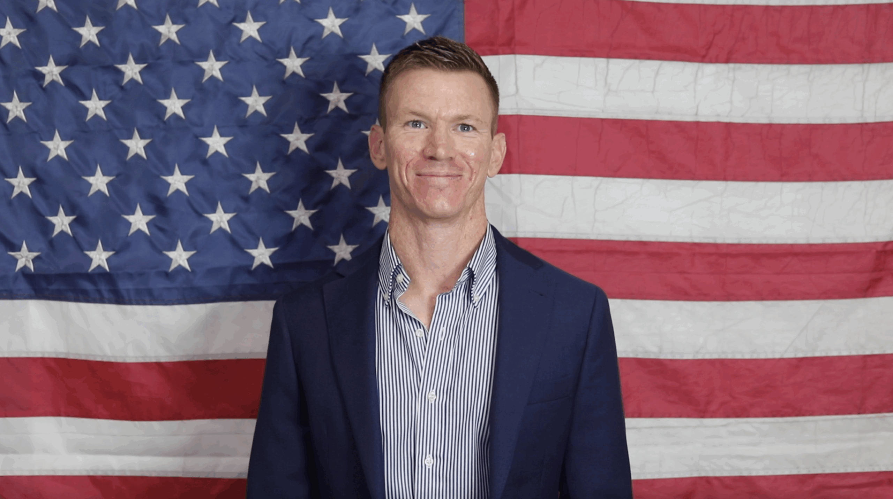
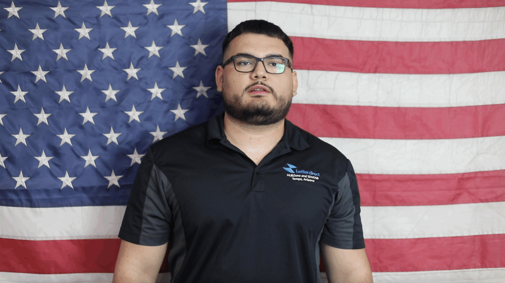
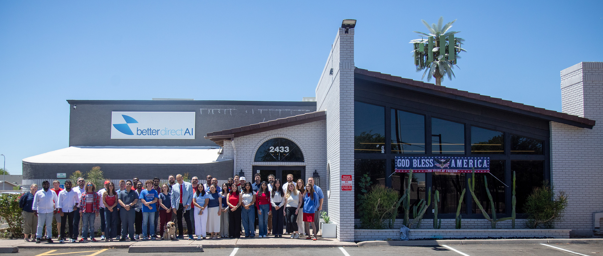

Customer outcomes
Technology recommendations grounded in operational requirements and real-world constraints.
About Better Direct AI
From Tempe to nationwide missions, our team brings technology sourcing, procurement, and hands-on delivery together.
What guides our work
Technology recommendations grounded in operational requirements and real-world constraints.
One team across sourcing, contracts, implementation, and ongoing support.
Meaningful local careers and long-term contribution to the community we call home.
Meet our team
Leadership and specialists working together across procurement, operations, contracts, and delivery.
Leadership
Founder & President

Mark Evans is the founder and president of Better Direct. He started in this industry as a sales agent for IBM and Lenovo, and has now grown Better Direct into a HUBZone-certified, Service-Disabled Veteran-Owned IT VAR with 45+ employees. Mark continually looks for ways to innovate and has teams dedicated to new projects. He has built a business that values customer success and has a positive community impact. As a harbour combat veteran and IT expert, he leads the company while encouraging leadership and discipline. His entrepreneurial vision guides the Better Direct team to deliver cutting-edge IT solutions.
Financial Quantitative Analyst

Diana Zhong is the Manager of Operations and Finance at Better Direct. In her Operations role, she aligns the departments with strategic goals and watches over government projects so they run seamlessly. On the financial side, Diana optimizes the profitability of the company by making sure it runs efficiently and by mitigating financial risk. She also serves as co-manager of the Army CHESS ADMC-3 contract.
Director of Sales, Deputy SEWP Program Manager

Kim Lambert is a Director of Sales at Better Direct who leads a dynamic sales team. She develops strong partnerships with distributors and manufacturers and assists her team in helping customers grow. Her goal is for clients to receive fast service and tailored IT solutions at a better value. Kim challenges her team to innovate so they can deliver beyond expectations.
Team
Purchasing Manager

Chase Cai is the Purchasing Manager at Better Direct. Seven years at Better Direct, she now manages the team that handles every aspect of Purchasing, including order processing, invoices, returns and even issue resolution. Chase develops and implements cost-saving strategies to strengthen the company's bottom line. She also has a role in working with the company's vendors to strengthen partnerships with them. Her goals are to ensure customer orders run smoothly and make the customer's jobs easier.
Director of Sales, ADMC-3 Program Manager

Kato Wong is a Director of Sales at Better Direct. Since 2018, he has overseen the ADMC-3 and Army CHESS contracts for the company. He focuses on building long-term customer relationships so he can understand operational requirements and align IT solutions to their needs.
Senior Engineer

Joe Holt is the Senior Engineer at Better Direct. Joe has more than 43 years in IT technical roles and sales experience, including System x engineering experience at IBM. He holds certifications from Cisco, IBM, HPE, and VMware, and specializes in evaluating, repairing, and deploying both legacy and modern IT solutions.
GSA & 2GIT Program Manager

Rachel Mock is the Program Manager for GSA and 2GIT at Better Direct. She manages the GSA Advantage storefront while focusing on strategic vendor relations and marketing. Her goal is to help Better Direct deliver exceptional customer service. With over a decade of experience, Rachel crafts IT solutions that solve complex problems efficiently.
GSA & 2GIT Contract Manager

Thien Duc Phung oversees GSA and 2GIT contracts at Better Direct. His focus is keeping product listings current, ensuring government compliance, and maintaining strong client relationships. He began as a GSA Admin in 2022 and now leads catalog growth, bid responses, and revenue-driving initiatives while collaborating with the fulfillment team to resolve customer inquiries.
SEWP Program Manager

Matthew Walz is the NASA SEWP Program Manager at Better Direct, which is its largest revenue-generating contract. Matt works closely with federal procurement teams to deliver IT solutions to government agencies. He focuses on expanding partnerships with OEMs so he has the best possible solutions for Better Direct's clients.
Project Manager

Anthony Hernandez is the Project Manager at Better Direct. He leads the services team across installations, repairs, and custom manufacturing projects. After starting in data entry, he grew with Better Direct to manage house accounts and high-value contracts while delivering excellent customer service.

Community impact
We invest in local talent, mentorship, and careers that support our community while improving the work we deliver to customers. More than half of our staff live locally, building meaningful careers and contributing to the Tempe community.
Work with us
Explore the contract and technology paths available to your organization.
Explore Contracts